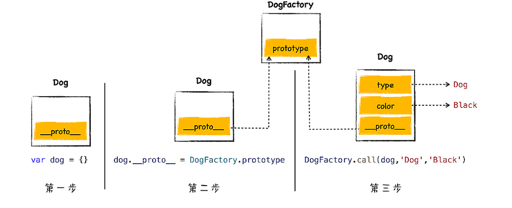

05｜原型链：V8是如何实现对象继承的？
继承就是一个对象可以访问另外一个对象中的属性和方法,在js中,我们通过原型和原型链的方式来实现了继承特性
继承的两种方式:
- 基于类的实现
- 基于原型的实现
js仅仅在对象中引入了一个原型的属性,就实现了语言的继承机制,基于原型的继承省去了很多基于类继承的繁文缛节,简洁而优美
原型继承是如何实现的?
js中的每个对象都包涵一个隐藏属性proto,我们就把该隐藏属性proto称为该对象的原型,proto指向了内存中的另一个对象,我们就把proto指向的对象称为该对象的原型对象,那么该对象就可以直接访问其原型对象的方法或者属性
原型链
查找属性的路径称为原型链,它像一个链条一样,将几个原型链接了起来
var animal = {
type:'default',
color:'default',
getInfo:function () {
return `type is ${this.type},color is ${this.color}`;
}
}
var dog = {
type:'dog',
color:'black'
}
dog.__proto__= animal;
var a = dog.getInfo();
console.log(a)//type is dog,color is black
通常情况下,隐藏属性是不能使用js来直接与之交互的.
虽然现代浏览器都开了一个口子,让js可以访问隐藏属性proto,但是在实际项目中,我们不应该直接通过proto来访问或者修改该属性,其主要原因有两个:
- 首先,这是隐藏属性,并不是标准定义的
- 其次,使用该属性会造成严重的性能问题
所以，在JavaScript中，是使用new加上构造函数的这种组合来创建对象和实现对象的继承
[info] 原型链是沿着对象的原型一级一级来查找属性的
作用域链
[info] 作用域链是沿着函数的作用域一级一级来查找变量的
构造函数是怎么创建对象的?
function DogFactory(type,color) {
this.type = type;
this.color = color;
}
var dog = new DogFactory('dog', 'red');
其实当V8执行上面这段代码时，V8会在背后悄悄地做了以下几件事情，模拟代码如下所示
var dog = {};
dog.__proto__=DogFactory.prototype
DogFactory.call(dog,'dog','red')
为了加深你的理解，我画了上面这段代码的执行流程图 
由上图可知,执行流程分为三步:
- 首先创建一个空白对象
- 然后将DogFactory的prototype属性设置为dog的原型对象,这就是给dog对象设置原型对象的关键一步,
- 最后,在使用dog来调用DogFactory,这时候DogFactory函数中的this就指向了对象dog,然后在DogFactory函数中,利用this对对象dog执行属性填充属性,最终就创建了dog对象
构造函数怎么实现继承?
函数除了拥有name和code这两个隐藏属性之外,还有另一个prototype属性
每个函数对象中都有一个公开的prototype属性，当你将这个函数作为构造函数来创建一个新 的对象时，新创建对象的原型对象就指向了该函数的prototype属性。当然了，如果你只是正常调用该函数，那么prototype属性将不起作用